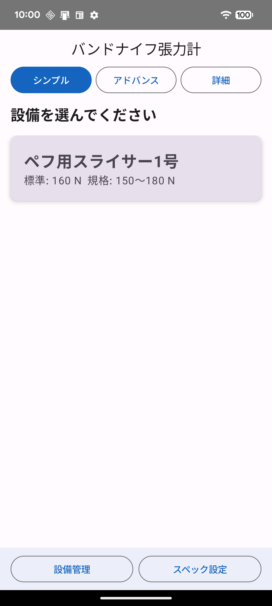
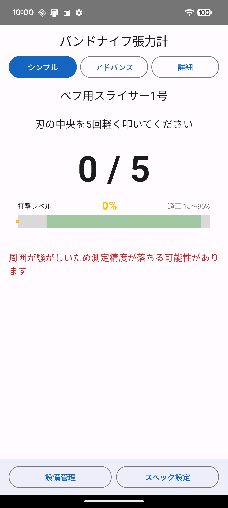
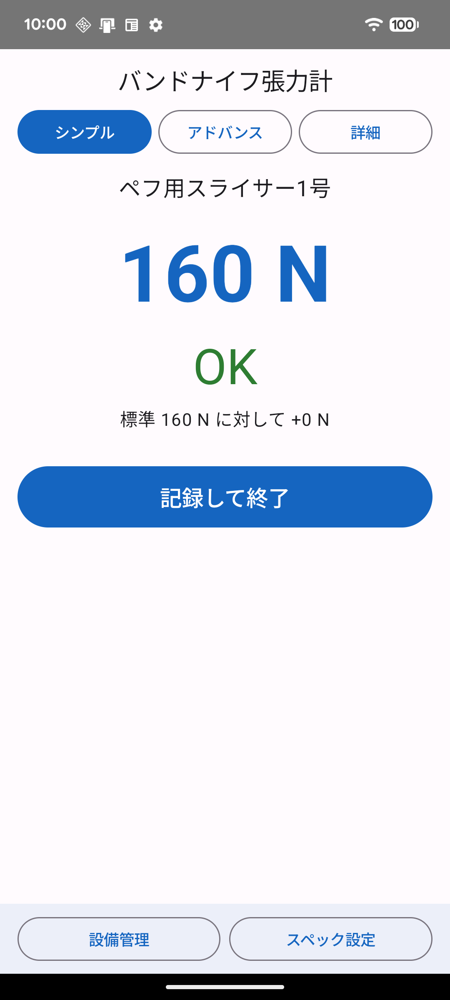
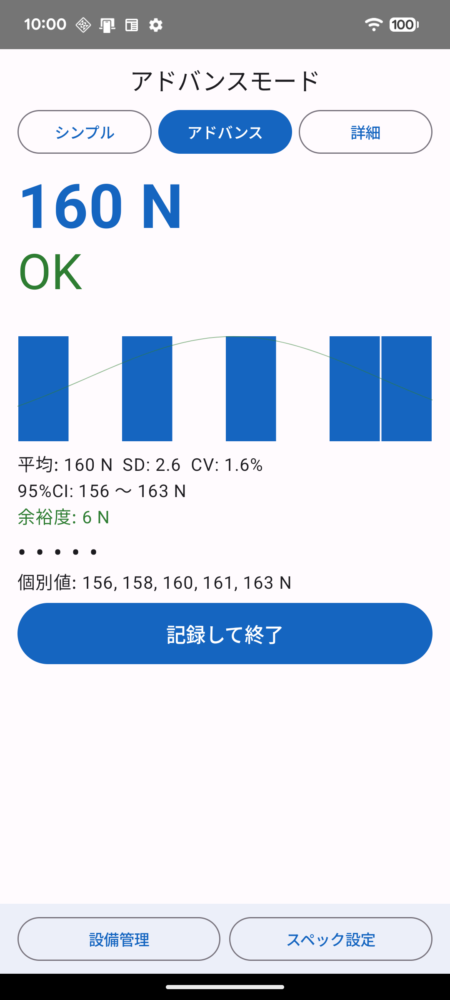
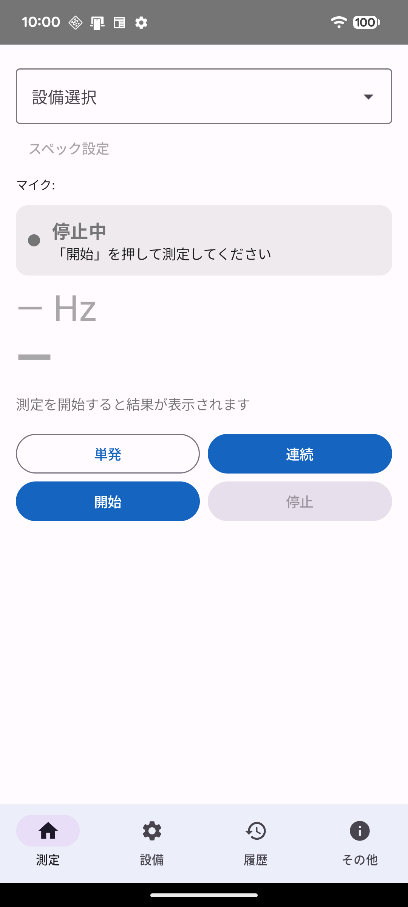
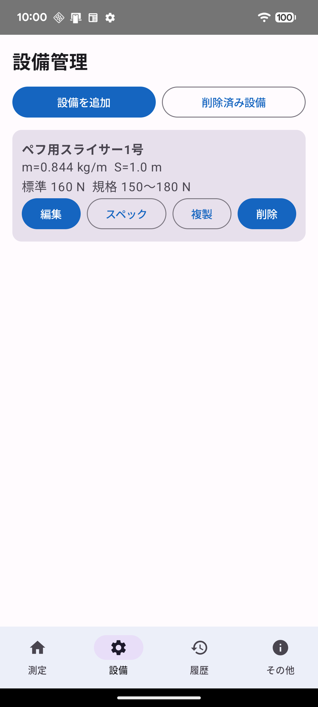
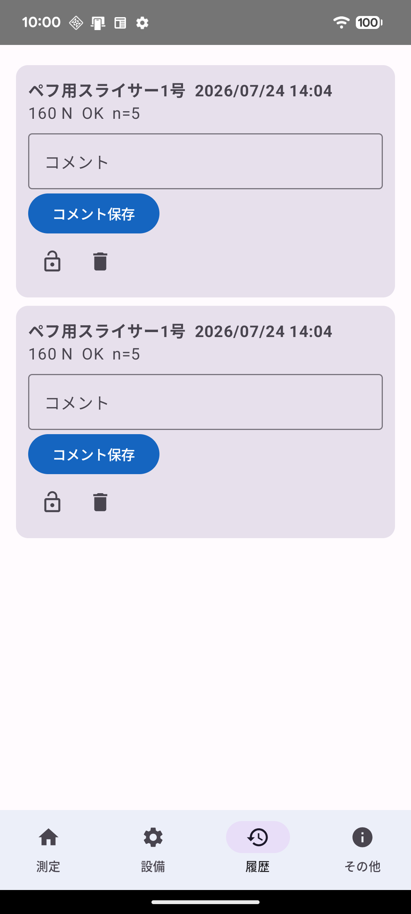
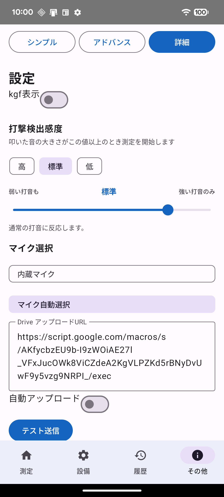
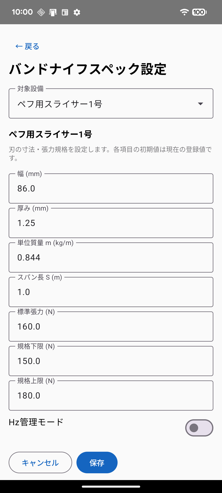
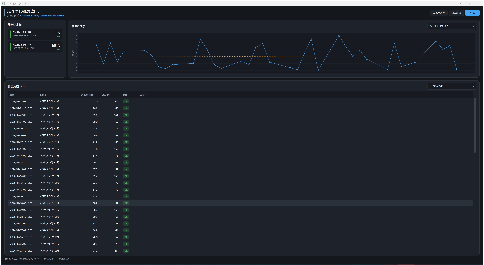

叩いて、はかる。
スマホ1台で、刃の張力管理を。
専用の張力計はもういりません。バンドナイフを軽く5回叩くだけで、音から張力を自動計算。誰が測っても、同じ結果。
| 約1分1回の測定にかかる時間 | 5回叩くだけの簡単操作 | 0円追加の測定器・専用ハード |
| 測るのは、いつものスマホマイクで打撃音を拾い、固有振動数から張力を自動計算。工具箱に測定器を増やす必要はありません。 | その場で合否がわかる設備ごとに登録した規格範囲と比べて、OK / 要調整 を大きな文字で即表示。判断に迷いません。 | 人による差が出ない張力計の当て方や読み取りのクセとは無縁。叩く位置さえ守れば、新人もベテランも同じ値になります。 |
| 記録は自動でクラウドへ測定したそばから Google ドライブに自動保存。転記ミスも、記録のつけ忘れもなくなります。 | 事務所のPCで推移がみえる付属の Windows ビューアで、設備ごとの張力推移をグラフ表示。刃の劣化傾向や調整時期がひと目でわかります。 | 使う人に合わせた3モード現場向けの「シンプル」、品質管理向けの「アドバンス」、管理者向けの「詳細」。必要な情報だけを表示します。 |
| ミスした打撃は自動で除外二重打撃・弱すぎる打撃・倍音のかぶりを品質チェックで検出。有効な打撃だけを集計します。 | 騒がしい工場でも打撃検出感度は3段階＋微調整に対応。外付けピンマイクにも切り替えられます。 | 設備は何台でも登録可能刃の寸法・スパン長・規格範囲を設備ごとに保存。複製機能で同型機の追加も一瞬です。 |
現場で叩く → クラウドに自動記録 → 事務所で推移を確認。
張力管理の一連の流れが、このシステムひとつで完結します。
バンドナイフ（帯刃）のスパン中央を軽く叩き、その音をスマートフォンのマイクで拾って固有振動数を検出し、刃の張力（N）を自動計算するシステムです。専用の張力計を使わずに、日常点検として誰でも同じ方法で張力を管理できます。
| 成果物 | 役割 |
|---|---|
バンドナイフ張力計.apk |
Android 測定アプリ。叩いた音から張力を算出し、合否判定・記録を行う |
drive-upload.gs |
Google Apps Script。測定記録を Google ドライブへ自動保存する |
バンドナイフ張力ビューア.exe |
Windows 閲覧ソフト。PC で履歴一覧と推移グラフを表示する |
測定（スマホ）→ 自動アップロード（Google ドライブ）→ 閲覧・分析（PC） という流れで、現場の測定値が自動的に事務所の PC から確認できるようになります。
アプリは利用者に合わせて 3 つのモードを切り替えられます（画面上部のボタン、または詳細モードの「その他」タブ）。
| モード | 想定ユーザー | 特徴 |
|---|---|---|
| シンプル | 現場作業者 | 設備を選んで 5 回叩くだけ。結果は大きな数字と OK / 要調整 のみ |
| アドバンス | 品質管理担当 | シンプルと同じ操作で、ヒストグラム・統計量（SD・CV・信頼区間）も表示 |
| 詳細 | 管理者 | 単発/連続測定、設備管理、履歴管理、感度・マイク・連携などの全設定 |
日常点検は次の 4 ステップで完了します。所要時間は 1 分程度です。
測定前に必ず機械を停止してください。
| ステップ | 操作 |
|---|---|
| 1 | アプリを起動する（シンプルモードで開きます） |
| 2 | 測定する設備のカードをタップする |
| 3 | 刃のスパン中央を 5 回 軽く叩く（マイクは刃から 1〜2 cm） |
| 4 | 結果（OK / 要調整）を確認し、「記録して終了」 をタップする |
 |
 |
 |
| 図1 設備を選ぶ | 図2 5回叩く | 図3 結果を確認して記録 |
要調整 と表示されたら、張力を調整したうえでもう一度測定してください。詳しい操作は次章以降で説明します。
対応 OS: Android 8.0（API 26）以上
バンドナイフ張力計.apk をスマートフォンにコピーします（USB ケーブル、共有ドライブなど）。マイク権限は測定に必須です。誤って拒否した場合は、Android の 設定 → アプリ → バンドナイフ張力計 → 権限 から許可し直してください。
設備の規格値を誰が変更したのかを記録に残すため、はじめに 名前とパスワード を設定します。
| 状況 | 選ぶもの | 操作 |
|---|---|---|
| はじめて使う人 | 新しく登録 | 名前とパスワード（6 文字以上）を入力 |
| 別の端末で登録済みの人 | 登録済みの使用者 | 同じ名前とパスワードでサインイン |
端末を初期化したりアプリを入れ直したりすると、保存された情報は消えます。同じ名前とパスワードでサインインし直してください。パスワードを忘れた場合は管理者に連絡してください。
アプリ起動時の既定モードです。迷う要素をなくした、現場での定例チェック専用の画面です。
登録済みの設備がカードで一覧表示されます。カードには 標準張力 と 規格範囲 が表示されているので、測定対象をタップしてください。
| 図1（再掲） 設備選択画面 |
カードをタップした時点で測定待機に入ります。誤って選んだ場合は画面上部のモード切替ボタンでいったん戻れます。 |
設備を選ぶと自動的に測定待機になります。「刃の中央を5回軽く叩いてください」と表示されたら測定開始です。
1 / 5 → 2 / 5 …）が進みます。| 図2（再掲） 測定中の画面 |
うまくカウントされないときは 8 章「正しい叩き方と測定のコツ」を参照してください。 |
5 回の測定が完了すると、自動的に結果画面に切り替わります。
| 図3（再掲） シンプルモードの結果画面（規格内の例） |
「記録して終了」をタップすると履歴に保存され、設備選択画面に戻ります。自動アップロードが ON の場合は Google ドライブにも送信されます（9 章参照）。 |
操作の流れはシンプルモードと同じです（設備を選ぶ → 5 回叩く → 記録）。結果画面に 統計情報とグラフ が追加されるため、測定のばらつきや刃の状態をより詳しく評価できます。
|
 図4 アドバンスモードの結果画面 |
こんなときに使います。
|
画面下部のタブ（測定 / 設備 / 履歴 / その他）で全機能にアクセスできます。
回数を固定しない自由な測定ができます。
|
 図5 詳細モードの測定タブ |
測定中は検出した周波数（Hz）と張力（N）がリアルタイムで表示され、完了後に履歴へ記録できます。 |
|
 図6 設備管理画面 |
|
過去の測定記録を新しい順に一覧表示します。
|
 図7 履歴画面 |
|
モード切替と各種設定をまとめたタブです。
|
 図8 設定画面 |
|
設備の規格値は Google ドライブで一元管理します。ドライブの設備マスターに載っていない設備では測定できません。 古い規格値のまま合否を出して、不良を良品と判定する事故を防ぐためです。
| 状態 | 画面の表示 | 測定 |
|---|---|---|
| ドライブ未登録の設備 | 設備カードに「ドライブ未登録」バッジ、選択できない | その設備のみ不可 |
| 最後の接続確認から 5 日以上 | 「あと N 日で測定できなくなります」 | 可 |
| 最後の接続確認から 7 日以上 | 「測定できません」＋「今すぐ確認」 | すべて不可 |
7 日ごとに電波の届く場所でアプリを開く 運用が前提です。手動で確認する場合は その他 → 設備マスターの共有 → 今すぐ確認 をタップしてください。
詳細モード → 設備タブ → 設備を追加（またはシンプルモード下部の「設備管理」）から登録します。
| 項目 | 説明 | 入力例 |
|---|---|---|
| 設備名 | 識別用の名前 | ペフ用スライサー1号 |
| 幅 / 厚み（mm） | 刃の断面寸法。単位質量 m の自動計算に使用 | 86 / 1.25 |
| スパン長 S（m） | 自由振動区間（支持点間）の長さ | 1.0 |
| 標準張力（N） | 目標とする張力 | 160 |
| 規格下限 / 上限（N） | OK / 要調整 の判定範囲 | 150 / 180 |
登録済み設備の寸法・規格は、スペック設定画面でいつでも変更できます。
|
 図9 スペック設定画面 |
スパン長 S は計算結果に 2 乗で効きます（付録 A 参照）。支持点間の実寸を正確に入力してください。 |
設備の追加・変更・削除には 使用者のサインインが必要 です。未設定の場合は画面にその案内が出るので、そこから登録してください（3 章参照）。
端末で設備を変更しただけでは、他の端末には反映されません。その設備は、ドライブへ登録し直すまで測定に使えなくなります。
| 出たメッセージ | 意味と対処 |
|---|---|
| 「〜件の設備が全端末から消えます」 | 消える設備名を確認し、問題なければもう一度実行する |
| 「他の人が先に設備マスターを更新しました」 | 今すぐ確認 で取り込み直してから、変更をやり直す |
| 「規格が正しくありません」 | 規格の下限・上限、単位質量、スパン長を見直す |
各端末は、アプリ起動時に自動で最新の設備マスターを取り込みます。
その他 → 設備マスターの更新履歴 → 履歴を読み込む で、世代（第 N 版）ごとの更新者・日時・変更内容の一覧が見られます。ドライブ側では、スプレッドシートの 「設備マスター履歴」 シートで同じ内容を確認できます。
測定精度は「叩き方」でほぼ決まります。次の表を目安にしてください。
| 項目 | 推奨 ○ | 避ける × |
|---|---|---|
| 道具 | プラスチックの柄、指の腹 | 金属ハンマー（高調波で誤検出しやすい） |
| 叩く位置 | スパンの中央 | 端・支持点（プーリー）付近 |
| 強さ | 軽く「ポン」と弾く。打撃レベル 15〜95% | 強打・こすり付け |
| 間隔 | 1 回ずつはっきり間を空ける | 連打（二重打撃と判定される） |
| マイク | 刃から 1〜2 cm | 刃に接触させる／遠すぎる |
必ず機械を停止し、刃が完全に止まってから測定してください。
| メッセージ | 対処 |
|---|---|
| 打撃が弱すぎます | もう少し強く叩く。改善しなければ感度を「高」へ |
| 打撃が強すぎます | 叩く力を弱める |
| 周囲が騒がしいため測定精度が落ちる可能性があります | 周囲の機械を止める・静かな時間帯に測る・感度を「低」へ |
| 二重打撃を検出 | 1 回ずつ間隔を空けて叩き直す |
騒音の大きい工場では、有線ピンマイク を刃の近くに固定する方法も有効です（設定 → マイク選択）。
測定記録を Google ドライブへ自動保存すると、事務所の PC からリアルタイムに履歴を確認できます。
スマホ（測定・記録・設備設定）
│ 自動アップロード / 設備マスターの取り込み（HTTPS）
▼
Google Apps Script（drive-upload.gs）
│ 追記・更新
▼
マイドライブ/バンドナイフ張力測定/
├─ 測定記録スプレッドシート（記録・設備マスター・履歴・使用者）
├─ records.csv ← Windows ビューアが読む
├─ equipment.json ← 設備マスター（全端末の正データ）
├─ equipment-history.json ← 更新履歴
└─ users.json ← 使用者一覧
drive-upload.gs の内容を貼り付けます。初回実行時、マイドライブに 「バンドナイフ張力測定」 フォルダが自動作成されます。ネットワーク圏外で測定した記録は端末に蓄積され、次回接続時にまとめて再送されます。
既に古いスクリプトで運用している場合も、
drive-upload.gsを貼り直して 再デプロイ してください。古いままだと「ドライブのスクリプトが最新ではありません」と表示され、設備マスターと使用者管理が使えません。
ウェブアプリの URL を知っている人は、既定では誰でも使用者登録でき、設備の規格値を書き換えられます。Apps Script の プロジェクトの設定 → スクリプト プロパティ に次を追加すると、登録に合言葉が必要になります。
| プロパティ | 値 |
|---|---|
REGISTRATION_KEY |
管理者だけが知る任意の文字列 |
設定した文字列を、新しく使う人に伝えてください。登録済みの人のサインインには影響しません。
| ファイル / シート | 内容 |
|---|---|
equipment.json / 「設備マスター」シート |
現在の設備設定。手で編集しないでください（失うと全端末が測定不能になります） |
equipment-history.json / 「設備マスター履歴」シート |
誰がいつ何を変えたか |
users.json / 「使用者」シート |
登録済みの使用者。パスワードそのものは保存されません |
PC で測定履歴の一覧・推移グラフ・CSV 出力ができるアプリケーションです。ランタイムのインストールは不要で、バンドナイフ張力ビューア.exe 単体で動作します。

バンドナイフ張力ビューア.exe をダブルクリックして起動します。マイドライブ\バンドナイフ張力測定）は自動検出されます。見つからない場合は 「フォルダ選択」 で records.csv のあるフォルダを指定してください。| エリア | 内容 |
|---|---|
| 最新測定値（左上） | 設備ごとの最新の張力・合否・測定日時 |
| 張力の推移（右上） | 時系列グラフ。右上のドロップダウンで設備を切替。破線は標準張力 |
| 測定履歴（下） | 全記録のテーブル。設備での絞り込みが可能。NG 行は色付き表示 |
| ボタン | 機能 |
|---|---|
| フォルダ選択 | データフォルダを手動で指定する |
| CSV 出力 | 表示中のデータを CSV ファイルとして保存する（Excel での分析用） |
| 更新 | 最新のデータを読み込み直す |
| 症状 | 確認すること |
|---|---|
| 叩いてもカウントが進まない | マイク権限が許可されているか／打撃レベルが 15% 以上あるか／感度を「高」にする |
| 測定が始まらない | 設備を選択したか／マイクを他のアプリが使用していないか |
| 張力の値がばらつく | 叩く位置がスパン中央か／金属で叩いていないか／周囲の騒音 |
| 値が明らかにおかしい | スペック設定の幅・厚み・スパン長が実寸どおりか（7 章） |
| 設備が一覧に出ない | 設備管理で登録済みか／「削除済み設備」に入っていないか |
| 設備が選べず「ドライブ未登録」と出る | 管理者が その他 → 設備マスターの共有 → ドライブへ登録 を実行したか（7 章） |
| 「測定できません」と出て何も測れない | 電波の届く場所で その他 → 設備マスターの共有 → 今すぐ確認 をタップする（7 章） |
| 設備を編集しようとするとサインインを求められる | 名前とパスワードを設定する（3 章）。忘れた場合は管理者に連絡 |
| 「〜は登録されていません」と出る | 別の端末で名前を変更した可能性があります。新しい名前でサインインし直してください |
| 「ドライブのスクリプトが最新ではありません」 | 管理者が drive-upload.gs を貼り直して再デプロイする（9 章） |
| ドライブに記録が上がらない | アップロード URL の設定／自動アップロード ON／ネットワーク接続／「テスト送信」の結果 |
| PC のビューアにデータが出ない | Google Drive for Desktop の同期が完了しているか／フォルダ内に records.csv があるか |
| ビューアのグラフが更新されない | 「更新」ボタンを押す／スマホ側のアップロードが完了しているか |
解決しない場合は、システム管理者へ「症状・設備名・測定日時・画面の写真」を添えて連絡してください。
弦（両端固定の張られた部材）の固有振動数と張力の関係式を利用しています。
T = 4 × m × S² × f²
| 記号 | 意味 | 備考 |
|---|---|---|
| T | 張力（N） | 求めたい値 |
| m | 単位長さあたりの質量（kg/m） | 幅 × 厚み × 鋼の密度から自動計算 |
| S | スパン長（m） | 支持点間の自由振動区間 |
| f | 1 次固有振動数（Hz） | 叩いた音を FFT 解析して検出 |
アプリは打撃音の周波数スペクトルから基本波を特定し、倍音（高調波）や二重打撃を品質チェックで除外したうえで張力を算出しています。
本マニュアルは 2026年7月時点のアプリ v1.0.0 に基づいています。